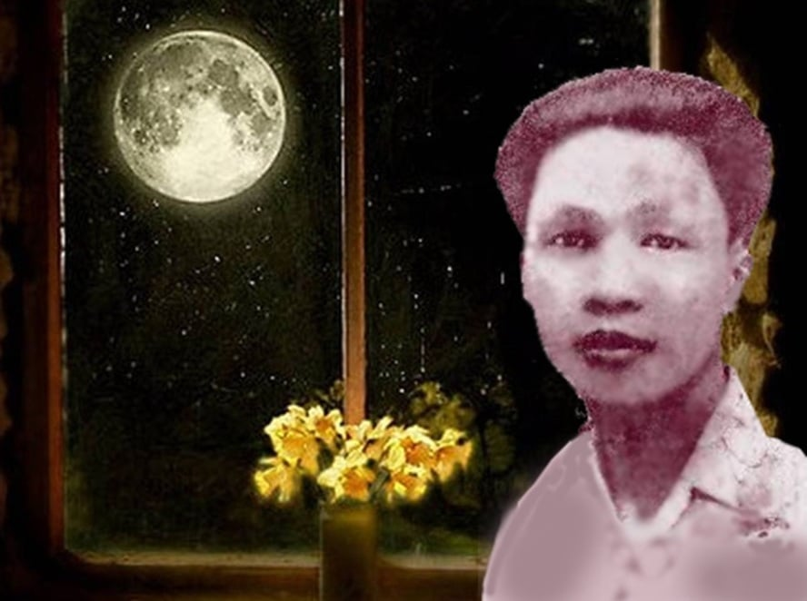

Chính tên là Nguyễn Trọng Trí. Sinh ngày 22-9-1912 ở Lệ Mỹ (Đồng Hới), mất ngày 11-11-1940, trú ngụ ở Qui nhơn từ nhỏ. Nhà nghèo, Cha mất sớm. Học trường Qui Nhơn đến năm thứ ba. Làm sở Đạc điền một độ, bị đau rồi mất việc. Vào Nam làm báo ít lâu lại trở về Qui Hoà. Kế đó mắc bệnh hủi, đưa vào nhà thương Qui Hoà rồi mất ở đó.
Làm thơ từ ngày mười sáu tuổi (lấy hiệu là Phong Trần rồi Lệ Thanh). Đến năm 1936, khi chủ trương tờ phụ trương văn chương báo Saigon mới đổi hiệu là Hàn Mạc Tử.
Đã đăng thơ: Phụ nữ tân văn Saigon, Trong khuê phòng, Đông Dương tuần báo, Người mới.
Đã xuất bản: Gái quê (1936).

.
Tôi đã nghe người ta mạt sát Hàn Mạc Tử nhiều lắm. Có người bảo: "Hàn Mạc Tử. Thơ với thẩn gì! toàn nói nhảm." Có người còn nghiêm khắc hơn nữa: "Thơ gì mà rắc rồi thế! Mình tưởng có ý nghĩa khuất phục, cứ đọc đi đọc lại hoài, thì ra nó lừa mình!". Xuân Diệu có lẽ cũng nghĩ đến Hàn Mạc Tử rong khi viết đoạn này: "Hãy so sánh thái độ can đảm kia (thái độ những nhà chán thi sĩ) với những cách đột nhiên mà khóc đột nhiên mà cười, chân nhảy, miệng vừa kêu: Tôi điên đây! Tôi điên đây! - Điên cũng không dễ làm như người ta tưởng đâu. Nếu không biết điên, tốt hơn là cứ tỉnh táo như thường mà yên lặng sống".[1]
Nhưng tôi cũng đã nghe những người ca tụng Hàn Mạc Tử. Trong ý họ, thi ca Việt Nam chỉ có Hàn Mạc Tử. Bao nhiêu thơ Hàn Mạc Tử làm ra họ đều chép lại và thuộc hết. Mà thuộc hết thơ Hàn Mạc Tử đâu phải chuyện dễ.
Đã khúc mắc mà lại nhiều: tất cả đến sáu bảy tập. Họ thuộc hết và chọn những lúc đêm khuya thanh vắng họ sẽ cao giọng ngâm một mình. Bài thơ đã biến thành bài kinh và người thơ đã trở nên một vị giáo chủ. Chế Lan Viên nói quả quyết:
"Tôi xin hứa hẹn với các người rằng, mai sau, những cái tầm thường, mực thước kia sẽ biến tan đi, và còn lại của cái thời kỳ này chút gì đáng kể đó là Hàn Mạc Tử ".[2]
Ngót một tháng trời tôi đã đọc thơ Hàn Mạc Tử [3]. Tôi đã theo Hàn Mạc Tử từ lối thơ Đường đến vở kịch bằng thơ Quần Tiên hội. Và tôi đã mệt lả. Chính như lời Hàn Mạc Tử nói trong bài tự Thơ điên, vườn thơ của người rộng rinh không bờ bến càng đi xa càng ớn lạnh.
Bây giờ đã ra khỏi cái thế giới kỳ dị ấy và đã trở về với cuộc đời tầm thường mà ý nhị, tôi xếp đặt lại những cảm tưởng hỗn độn của tôi.
THƠ ĐƯỜNG LUẬT- Theo Ông Quách Tấn Phan Sào Nam [4] hồi trước xem thơ Đường luật Hàn Mạc Tử có viết trên báo đại khái nói: "Từ về nước đến nay, tôi được xem thơ quốc âm cũng khá nhiều, song chưa gặp bài nào hay đến thế [5]... Ôi hồng nam nhạn bắc, ước ao có ngày gặp gỡ để bắt tay nhau cười lên một tiếng lớn ấy là thỏa hồn thơ đó". Thơ Đường luật Hàn Mạc Tử làm ra nhiều nhưng bị thất lạc gần hết, tôi không được xem mấy bài. Song trong những bài tôi được xem, tôi cũng đã gặp ít câu hay, chẳng hạn như:
Nằm gắng đã không thành mộng được,
Ngâm tràn cho đỡ chút buồn thôi.
Dầu sao tôi vẫn nghĩ cái khuôn khổ bó buộc của luật Đường có lẽ không tiện cho sự nẩy nở một nguồn thơ rào rạt và lạ lùng như nguồn thơ Hàn Mạc Tử.
GÁI QUÊ- Nhiều bài có thể là của ai cũng được. Còn thì tả tình quê trong cảnh quê. Lời thơ dễ dàng, tứ thơ bình dị. Nhưng tình ở đây không có cái vẻ mơ màng thanh sạch như mối tình ta vẫn quen đặt vào trong khung cảnh những vườn tre, những đồi thông. Ấy là một thứ tình nồng nàn, lơi lả, rạo rực, đầy hình ảnh khêu gợi. Ông Phạm Văn Ký đề tựa tập thơ ấy phải lắm; "Gái quê", và "Une voix sur la voie" đều bắt nguồn trong tình dục.
Thơ Điên - Thơ điên gồm có ba tập:
1. Hương thơm.
2. Mật đắng.
3. Máu cuồng và hồn điên.
HƯƠNG THƠM - Ta bắt đầu bước vào một ánh trăng, ánh nắng, tình yêu và cả người yêu đều muốn biến ra hương khói. Một trời tình ái mới dựng lên đâu đấy. Tuy có đôi vần đẹp, cảm giác chung nhạt tẻ thế nào.
MẬT ĐẮNG - Ta vẫn đi trong mờ mờ. Nhưng thỉnh thoảng một luồng sáng lạ chói cả mắt. Nguồn sáng toả ra từ một linh hồn vô cùng khổ não. Ta bắt gặp dấu tích còn hoi hóp của một tình duyên vừa chết yểu. Thất vọng trong tình yêu, chuyện ấy trong thơ ta không thiếu gì, nhưng thường là một thứ buồn rầu có thấm thía vẫn dìu dịu. Chỉ trong thơ Hàn Mạc Tử mới thấy một nỗi đau thương mãnh liệt như thế. Lời thơ như dính máu.
MÁU CUỒNG VÀ HỒN ĐIÊN - Đến đây ta hoàn toàn ra khỏi cái thế giới thực và cả thế giới mộng của ta. Xa lắm rồi. Ta thấy những gì xung quanh ta? Trăng, toàn trăng, một ánh trăng gắt gao, ghê tởm linh động như một người hay đứng hơn như một yêu tinh. Trăng ở đây cũng ghen, cũng giận, cũng cay nghiệt, cũng trơ tráo và cũng náo nức dục tình. Hàn Mạc Tử đi trong trăng há miệng cho máu tung ra làm biển cả, cho hồn văng ra và rú lên những tiếng ghê người... Ta rùng mình, ngơ ngác, ta đã lục lọi khắp trong đấy lòng ta, ta không thấy có tí gì giống cái cảnh trước mắt. Trời đất này thực của riêng Hàn Mạc Tử ta không hiểu được và chắc chắn cũng không ai hiểu được. Nghĩ thế ta bỗng thương con người cô độc. Đã cô độc ở kiếp này và e còn cô độc đến muôn kiếp. Hàn Mạc Tử chắc cũng biết thế nên lúc sinh thời người đã nguyền với Chúa sẽ không bao giờ cho xuất bản Thơ điên. Một tác phẩm như thế ta không có thể nói hay hay dở, nó đã ra ngoài vòng dân gian, nhân gian không có quyền phê phán. Ta chỉ biết trong văn thơ cổ kim không có gì kinh dị hơn. Ta chỉ biết ta đương đứng trước một người sượng sầm vì bệnh hoạn, điên cuồng vì đã quá đau khổ trong tình yêu. Cuộc tình duyên ra đời với tập Hương thơm, hấp hối với tập Mật đắng, đến đây thì đã chết thiệt rồi, nhưng khí lạnh còn toả lên nghi ngút.
Một nhà chuyên môn nghiên cứu những trạng thái kỳ dị của tâm linh người ta xem tập Máu cuồng và Hồn điên có lẽ sẽ lượm được nhiều tài liệu hơn một nhà phê bình văn học. Tuy thế, đây đó ta gặp những câu rất hay.
Như tả cảnh đồi núi một đêm trăng có câu:
Ngả nghiêng đồi cao bọc trăng ngủ
Đầy mình lốm đốm những hào quang.
Lên chơi trăng có câu:
Ta bay lên! Ta bay lên.
Gió tiễn đưa ta tới nguyệt thiềm
Ta ở cõi cao nhìn trỏ xuống:
Lâng lâng mây khói quyện trăng đêm.
Đọc những câu ấy có cái thú vị ở xứ lạ gặp người quen, vì đó là những cảm giác ta có thể có. Lại có khi những cảm giác ở ta rất thường mà trong trí Hàn Mạc Tử rất dễ sợ. Một đám mây in hình dưới dòng nước thành ra:
Mây chết đuối ở dòng sông vắng lặng.
Trôi thây về xa tận cõi vô biên.
Cái ý muốn mượn lời thơ để tả tâm sự mình cũng chở nên điên cuồng và đau đớn dị thường:
Ta muốn hồn trào ra đầu ngọn bút;
Mỗi lời thơ đều lính não tâm ta.
Bao nét chữ quay cuồng như máu vọt,
Như mê man chết điếng cả làn da.
Cứ để ta ngất ngây trong vũng huyết,
Trải niềm đau trên mảnh giấy mong manh;
Đừng nắm lại nguồn thơ ta đương siết
Cả lòng ta trong mớ chữ rung rinh.
Tôi trích ra vài đoạn có thể thích được còn bao nhiêu đoạn nữa tuy ta không thích vì nó không có gì hợp với lòng ta, nhưng ta cũng biết rằng với Hàn Mạc Tử hẳn là những câu tuyệt diệu. Nó đã tả đúng tâm trạng của tác giả. Lời thơ có vẻ thành thực thiết tha lắm.
XUÂN NHƯ Ý - Mùa xuân Hàn Mạc Tử nói đây có khi ở đâu hồi trời đất mới dựng nên, có khi ra đời một làn tới Chúa Jésus, có khi hình như chỉ là mùa xuân đầu năm. Nhưng dầu sao cũng không phải là một mùa xuân thường với những màu sắc, những hình dáng ta vẫn quen biết. Đây là một mùa xuân trong tưởng tượng, một mùa xuân theo ý muốn của thi nhân, đầy rẫy những lời kinh cầu nguyện, những hương đức hạnh, hoa phẩm tiết, nhạc thiêng liêng, từng ánh trăng, ánh thơ. Nhất là ánh thơ. Với Hàn Mạc Tử thơ có một sự quan hệ phi thường. Thơ chẳng những để ca tụng Thượng đế mà cũng để nối người ta với Thương đế, để ban phước cho cả thiên hạ. Cho nên mỗi lần thi sĩ há miệng - sao lại há miệng? - Cho thơ trào ra là chín từng mây náo động, muôn vì tinh tú xôn xao. Người ta sẽ thấy:
Đường thơ bay sáng láng như sao xa
Trên lụa trắng mười hai hàng chữ ngọc
Thêu như thêu rồng phượng kết tinh hoa.
Hình như trong các thi phẩm xưa nay có tính cách tôn giáo không gì giống như vậy. Hàn Mạc Tử đã dựng riêng một ngôi đền thờ Chúa. Thiếu lòng tin, tôi chỉ là một du khách bỡ ngỡ không thể cùng quỳ lạy với thi nhân. Nhưng lòng tôi có dửng dưng, trí tôi làm sao không ngợp cái vẻ huy hoàng, trang trọng, lung linh, huyền ảo của lâu đài kia? Có những câu thơ đẹp một cách lạ lùng, đọc nên như rưới vào hồn một nguồn sáng láng. Xuân như ý rõ ràng là tập thơ hay nhất của Hàn Mạc Tử.
Với Hàn Mạc Tử Chúa gần lắm. Người đã tìm lại những rung cảm mạnh mẽ của các tín đồ thời Thượng cổ. Ta thấy phảng phất cái không khí Athalic. Cho nên mặc dầu thỉnh thoảng còn sót lại một hai dấu tích Phật giáo, chắc những người đồng đạo chẳng vì thế mà làm khó dễ với di thảo của thi nhân.
Huống chi thơ Hàn Mạc Tử ra đời, điều ấy chứng rằng đạo Thiên Chứa ở xứ này đã tạo ra một cái không khí có thể kết tinh lại thành thơ. Tôi tin rằng những tình cảm có thể diễn ra thơ mới thiệt là những tình cảm đã thấm đượm tận đáy hồn đoàn thể.
THƯỢNG THANH KHÍ - Một vài bài đặc sắc ghi lại những cảnh thấy trong chiêm bao, ở đâu giữa khoảng các vì tinh tú trên kia. Đại khái không khác cảnh ‘‘Xuân như ý’’ mấy, chỉ thiếu tính cách tôn giáo, huyền bí nhưng không thiêng liêng.
CẨM CHÂU DUYÊN - Một hai năm trước khi mất, sự tình cờ đưa đến trong đời Hàn Mạc Tử hình ảnh một giai nhân có cái tên khả ái: nàng Thương Thương. Nàng Thương có lẽ chỉ yêu thơ Hàn Mạc Tử và Hàn Mạc Tử hình như cũng không biết gì hơn hai chữ Thương Thương. Nhưng như thế cũng để thi nhân đưa nàng vào ‘‘tháp thơ’’. Nàng sẽ luôn luôn đi về trong những giấc mơ của người. Có khi người thơ thấy mình là Tư Mã Tương Thư đương nghe lời Trác Văn Quân năn nỉ:
Đã mê rồi! Tư mã chàng ôi!
Người thiếp lao đao sượng cả người.
Ôi! Ôi! Hãm bớt cung cầm lại
Lòng say đôi má cũng say thôi.
Song những phút mơ khoái lạc ấy có được là bao. Tỉnh dậy, người thấy:
Sao trìu mến thân yêu đâu vắng cả?
Trơ vơ buồn và không biết kêu ai!
Bức thư kia sao chẳng viết cho dài,
Cho khắng khít nồng nàn thêm chút nữa.
Ta tưởng nghe lời than của Huy Cận.
Nhưng cuộc đời đau thương kia đã đến lúc tàn, và nguồn thơ kia cũng đã đến lúc cạn, Hàn Mạc Tử chốc chốc lại ra ngoài biên giới thơ, lạc vào thế giới đồng bóng.
DUYÊN KỲ NGỘ VÀ QUẦN TIÊN HỘI - Mối tình đối với nàng Thương Thương còn khiến Hàn Mạc Tử viết ra hai vở kịch bằng thơ này nữa. Quần tiên hội viết chưa xong và không có gì. Duyên kỳ ngộ hay hơn nhiều. Đây là một giấc mơ tình ái, ngắn ngủi nhưng xinh tươi, đặt vào một khung cảnh tuyệt diệu. Thi nhân dẫn ta đến một chốn nước non thanh sạch chưa từng in dấu chân người. Ở đó tiếng chim hót, tiếng suối reo, tiếng tiêu ngân đều biến thành những lời thơ tình tứ. Ở đó Hàn Mạc Tử sẽ gặp nàng Thương Thương mà người không mong được gặp mặt ở kiếp này. Nàng sẽ nói với những lời nồng nàn âu yếm khiến chim nước đều say sưa. Nhưng rồi người sẽ cùng tiếng tiêu cùng đi như vụt nhớ đền cái nghiệp nặng nề đương chờ người nơi trần thế. Và giữa lúc nàng gục đầu khóc, cảnh tiên lại rộn rã tiếng suối ca.
Trong thi phẩm Hàn Mạc Tử có lẽ tập này là trong trẻo hơn cả. Còn từ thỏ Đường luật với những câu thơ:
Bóng nguyệt leo song sờ sẫm gối;
Gió thu lọt cửa cọ mài chăn.
Cho đến "Gái quê", "Xuân như ý" và các tập khác, lời thơ thường vẩn đục.
o O o
Tôi đã nói hết cảm tưởng của tôi trong lúc đọc thơ Hàn Mạc Tử. Không có bao giờ tôi thấy cái việc phê bình thơ tàn ác như lúc này. Tôi nghĩ đến người đã sống trong túp lều tranh phải lấy bì thư và giấy nhựt trình che cho mái nhà đỡ dột. Mỗi bữa cơm đưa đến người không sao nuốt được vì ăn khổ quá. Cảnh cơ hàn ấy và chứng bệnh kinh khủng đã bắt người chịu bao nhiêu phũ phàng, bao nhiêu ruồng rẫy. Sau cùng người bị vứt hẳn ra ngoài cuộc đời, bị giữ riêng một nơi, xa hết thảy mọi người thân thích. Tôi nghĩ đến bao nhiêu năm người bó tay nhìn cảnh thể phách lẫn linh hồn tan rã...
Một người đau khổ nhường ấy, lúc sống ta hững hờ bỏ quên, bây giờ mất rồi ta xúm lại kẻ chê người khen. Chê hay khen tôi đều thấy có gì bất nhẫn.
Mai- 1941
BẼN LẼN
Trăng nằm sóng soải trên cành liễu
Đợi gió đông về để lả lơi
Hoa lá ngây tình không muốn động
Lòng em hồi hộp, chị Hằng ơi
Trong khóm vi vu rào rạt mãi
Tiếng lòng ai nói? Sao im đi?
Ô kìa, bóng nguyệt trần truồng tắm
Lộ cái khuôn vàng dưới đáy khe
Vô tình để gió hôn lên má
Bẽn lẽn làm sao lúc nửa đêm
Em sợ lang quân em biết được
Nghi ngờ tới cái tiết trinh em
(Gái quê)
TÌNH QUÊ
Trước sân anh thơ thẩn.
Đăm đăm trông nhạn về;
Mây chiều còn phiêu bạt
Lang thang trên đồi quê;
Gió chiều quên ngừng lại;
Giòng nước quên trôi đi...
Ngàn lau không tiếng nói;
Lòng anh dường đê mê.
Cách nhau ngàn vạn dặm
Nhớ chi đến trăng thề;
Dầu ai không mong đợi.
Dầu ai không lắng nghe
Tiếng buồn trong sương đục.
Tiếng hờn trong luỹ tre.
Dưới trời thu man mác.
Bàng bạc khắp sơn khê.
Dầu ai trên bờ liễu.
Dầu ai dưới cành lê...
Với ngày xuân hờ hững,
Cố quên tình phu thê,
Trong khi nhìn mây nước,
Lòng xuân cũng não nề...
(Gái quê)
MÙA XUÂN CHÍN
Trong làn nắng ửng: khói mơ tan,
Đôi mái nhà tranh lấm tấm vàng.
Sột soạt gió trêu tà áo biếc,
Trên giàn thiên lý. Bóng xuân sang.
Sóng cỏ xanh tươi gợn tới trời
Bao cô thôn nữ hát trên đồi;
- Ngày mai trong đám xuân xanh ấy,
Có kẻ theo chồng bỏ cuộc chơi...
Tiếng ca vắt vẻo lưng chừng núi,
Hổn hển như lời của nước mây,
Thầm thĩ với ai ngồi dưới trúc,
Nghe ra ý vị và thơ ngây...
Khách xa gặp lúc mùa xuân chín,
Lòng trí bâng khuâng sực nhớ làng:
- “Chị ấy, năm nay còn gánh thóc
Dọc bờ sông trắng nắng chang chang?”
(Hương thơm)
TRƯỜNG TƯƠNG TƯ
Hiểu gì không ý nghĩa của trời thơ?
Của hương hoa trong trăng lờn lợt bảy
Của lời câm muôn vì sao áy náy
Hiểu gì không em hỡi! Hiểu gì không?
Anh ngâm nga để mở rộng cửa lòng
Cho trăng xuân tràn trề say chới với
Cho nắng hường vấn vương muôn ngàn sợi
- Cho em buồn trời đất ứa sương khuya
Để em buồn, để em nghiệm cho ra
Cái gì kết lại mới thành tinh tú?
Và uyên ương bởi đâu không đoàn tụ?
Và tình yêu sao lại dở dang chi?
Và vì đâu gió gọi giật lời đi?
- Lời đi qua một chiều trong kẽ lá
Một mùi thơm mới nửa lừng sa ngã
Anh mến rồi ý vị của làn mơ?
Lệ Kiều ơi! Em còn giữ ý thơ
Trong đôi mắt mùa thu trong leo lẻo
Ở xa xôi lặng nhìn anh khô héo
Bên kia trời, hãy chụp cả lòng anh
Hãy van lơn ở dưới chân Bàn thành
Cho yêu ma muôn năm vùng trở dậy
Náo không gian cho lửa lòng bừng cháy
Và để cho kinh động đến người tiên
Đang say sưa ở thế giới hão huyền
Đang trững giỡn ở bên sông Ngân biếc...
Anh rõ trước: sẽ có ngày cách biệt
Ngó như gần song vẫn thiệt xa khơi!
Lau mắt đi đừng cho lệ đầy vơi
Hãy mường tượng một người thơ đang sống
Trong im lìm lẻ loi trong dãy động
- Cũng hình như em hỡi, động Huyền Không
Mà đêm nghe tiếng khóc ở đáy lòng
Ở trong phổi, trong tim, trong hồn nữa...
Em cố nghĩ ra một chiều vàng úa
Lá trên cành héo hắt, gió ngừng ru:
"Một mối tình nức nở giữa âm u
"Một hồn đau rã lần theo hương khói
"Một bài thơ cháy tan trong nắng rọi
"Một lời run hoi hóp giữa không trung
"Cả niềm yêu ý nhớ cả một vùng
"Hoá thành vũng máu đào trong ác lặn."
Đấy là: tất cả người anh tiêu tán
Cùng Trăng Sao bàng bạc xứ say mơ
Cùng tình em tha thiết những văn thơ
Ràng rịt mãi cho đến ngày tận thế
12-1939
(Mật đắng)
AVE MARIA
Như song Lộc triều nguyên ơn phước cả
Dâng cao dâng thần nhạc sáng hơn trăng
Thơm tho bay cho đến cõi Thiên Đàng
Huyền diệu biến thành muôn kinh trọng thể
Và Tổng lãnh Thiên thần quỳ lạy Mẹ
Tung hô câu đường hạ ngớp châu sa
Hương xông lên lời ca ngợi sum hoà
Trí miêu duệ của muôn vì rất thánh.
Maria! Linh hồn tôi ớn lạnh!
Run như run thần tử thấy long nhan.
Run như run hơi thở chạm tơ vàng...
Nhưng lòng vẫn thấm nhuần ơn trìu mến.
Lạy Bà là Đấng trinh tuyền thánh vẹn
Giàu nhân đức, giàu muôn hộc từ bi.
Cho tôi dâng lời cảm tạ phò nguy
Cơn lâm luỵ vừa trải qua dưới thế.
Tôi cảm động rưng rưng hai hàng lệ
Dòng thao thao bất tuyệt của nguồn thơ
But tôi reo như châu ngọc đền vua
Trí tôi hớp bao nhiêu là khí vị
Và trong miệng ngậm câu ca huyền bí
Và trong tay nắm một nạm hoà quang
Tôi no rồi ơn võ lộ hoà chan.
Tấu lạy Bà. Bà rất nhiều phép lạ
Ngọc như Ý vô tri còn biết cả
Huống chi tôi là Thánh thể kết tinh
Tôi ưa nhìn Bắc Đẩu rạng bình minh
Chiếu cùng hết khắp ba ngàn thế giới
Sáng nhiều quá cho thanh âm vời vợi
Thơm dường bao cho miệng lưỡi không khen
Hỡi Sứ Thần Thiên Chúa Ga-bri-en
Khi người xuống truyền tin cho Thánh Nữ
Người có nghe xôn xao muôn tinh tú
Người có nghe náo động cả muôn trời
Người có nghe thơ mầu nhiệm ra đời
Để ca tụng - bằng hương hoa sáng láng
Bằng tràng hạt, bằng Sao Mai chiếu rạng
Một đêm xuân rất đỗi anh linh
Cho tôi thắp hai hàng cây bạch lạp
Khói nghiêm trang sẽ dâng lên tràn ngập
Cả Hàn Giang, cả màu sắc thiên không
Lút trí khôn và ám ảnh hương lòng
Cho sốt sắng, cho đê mê nguyện ước.
Tấu lạy Bà, lạy Bà đầy ơn phước
Cho tình tôi nguyên vẹn tơ trăng rằm
Thơ trong trắng như một khối băng tâm
Luôn luôn reo trong hồn, trong mạch máu
Cho vỡ lở cả muôn nghìn tinh đẩu
Cho đê mê âm nhạc và thanh hương
Chim hay tên ngọc, đá biết tuổi vàng
Lòng vua chúa cũng như lòng thê thứ
Sẽ ngất ngây bởi chưng thư đầy ứ
Nguồn thiêng liêng yêu chuộng Mẹ Sầu Bi.
Phượng Trì, Phượng Trì, Phượng Trì, Phượng Trì
Thơ tôi bay suốt một đời chưa thấu
Hồn tôi bay đến bao giờ mới đâu
Trên triều thiên ngời chói vạn hào quang.
(Xuân như ý)
ĐÊM XUÂN CẦU NGUYỆN
Tặng cả và thiên hạ
Trời hôm nay bình an như nguyệt bạch,
Đường trăng xa, ánh sáng tuyệt vời bay...
Đây là hương quý trọng thấm trong mây
Ngời phép lạ của đức tin kiều diễm, [1]
Câu tàn tạ, khong khen long cả phiếm:
Bút Xuân Thu [2] mùa nhạc đến vừa khi
Khắp mười phương điềm lạ trổ hoài nghi:
Cây bằng gấm, và lòng sông toàn ngọc!
Và đầu hôm một vì sao liền mọc
Ở phương Nam mầu nhiệm biết ngần mô!
Vì muôn kinh dồn dập cõi thơm tho
Thêm nghĩa lý sáng trưng như thất bảo
Ta chấp hai tay quỳ hoan hảo
Ngửa trông cao, cầu nguyện trắng không gian [3]
Để vừa dâng vừa hiện bốn mùa xuân
Nở một lượt giàu sang hơn Thượng Đế.
*
Đã no nê, đã bưa rồi, thế hệ
Của phường trai mê mẩn khí thanh cao
Phượng hoàng bay trong một tối trăng sao
Mà ánh sáng không còn khiêm nhượng nữa
Đương cầu xin ọc thơ ra đường sữa
Ta ngất đi trong khoái lạc của hồn đau...
Trên chín tầng, diêu động cả trân châu
Đường sống lại muôn ngàn hoa phẩm tiết,
Nhịp song đôi: này đây, cung cầm nguyệt
Ướp lời thơ thành phước lộc đường tu
Tôi van lơn, thầm nguyện chúa Giêsu
Ban ơn xuống cho mùa xuân hôn phối,
Xin tha thứ những câu thơ tội lỗi
Của bàn tay thi sĩ kẻ lên trăng
Trong bao đêm xao xuyến vũng sông Hằng.
(Xuân như ý)
Lới chú của Hàn Mạc Tử:
[1] Nhơn đức trọn lành
[2] Ý nói sự ngợi khen có văn vẻ như trong sách Xuân Thu
[3] Ý nói cầu nguyện rất sốt sắn cảm động được màu sắc của không giann biết từ sắc xám hay đen ra trắng, hoặc nói cầu nguyện từ đầu hôm đến sáng bạch
RA ĐỜI
Một chiều xanh - một chiều xanh huyền hoặc
Sáng bao vây lút khỏi thiên không. ;
Xuất thế gian [1] chưa có tại trong lòng,
Muôn ý tứ say chìm nơi Bát giác
Hương cám dỗmê người trong khoái lạc
A! a! a!
Thiên địa đắm hoang mang
- Là đang khi thờ lạy cả Thiên đàng
Bay những tiếng ; tung hô Thánh đức
Muôn thần phẩm trong lâng lâng chầu chực
Ánh hào quang chan chói ngất lưu ly
Ôi, cao sang khôn ví trọng ai bi
Trên nước cả có vô vàn châu báu.
Trí rất ngớpn bởi chưng xuân hồn hậu,
Đã ra đời, theo lịnh của Ngôi Hai.
Ôi thánh tai, [2]thánh tai và thánh tai.
Cả trời bỗng nổi lên muôn điệu nhạc
Rất trọng vọng, rất thơm tho, man mác
Rất phương phi [3], trên hết cả anh hoa
Xuân ra đời! Điềm ngọc ấm như ngà
Thơ có tuổi và chiêm bao có tích,
Và tâm tư có một điều rất thích,
Không nói ra vì sợ bớt say sưa!...
- ‘‘Chàng ơi! [4] Chàng ơi, sự lạ đêm qua!
Mùa xuân tới mà không ai biết cả…
(Xuân như ý)
**
Chúng tôi còn muốn trích ít bài nữa. Nhưng Ô. Quách Tấn, người giữ bản quyền thơ Hàn Mac Tử, yêu cầu chúng tôi chỉ trích năm bài trở xuống trong những tập chưa in thành sách.
Lới chú của Hàn Mac Tử:
[1]Phật giáo chia thế giới làm hai cõi: Thế gian và Xuất thế gian: tức là thế giới hữu hình và thế giới vô vi, đây sanh xuất thế gian với cõi thanh tịnh của lòng
[2] Danh từ biểu lộ sự hoan hỉ và cung kính đối với Thiên Chúa
[3] Tiếng nhạc trên trời rất mầu nhiệm, hình dung được cả sự phương phi.
[4]Chàng đây là thi sĩ, không phải chàng của thiếp